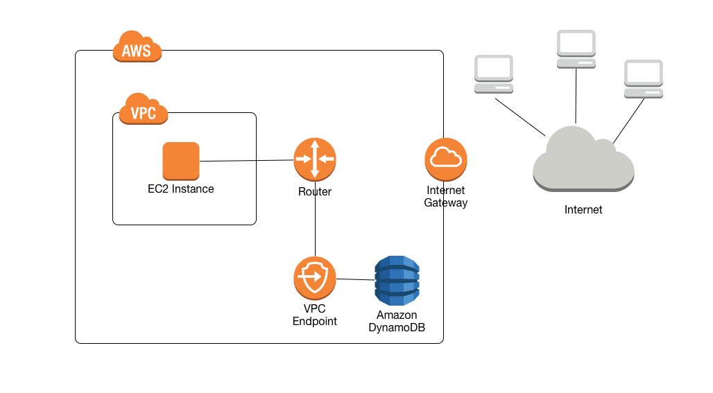

Test Report
Review questions
Jun 17, 2019 03:44AM EDT
 16 correct
16 correct 49 incorrect
49 incorrectYour answer
B. Launch an Elastic Beanstalk application to take the processing job of the logs.
C. Launch an EC2 instance with enough EBS volumes to consume the logs which can be used for further processing.
D. Use CloudTrail to store all the logs which can be analyzed at a later stage.
Correct answer is A as the Kinesis data firehose can be used to capture data and push to S3 with the frequency from multiple producers
Refer AWS documentation - Kinesis Data Firehose
Amazon Kinesis Data Firehose is a fully managed service for delivering real-time streaming data to destinations such as Amazon Simple Storage Service (Amazon S3), Amazon Redshift, Amazon Elasticsearch Service (Amazon ES), and Splunk. With Kinesis Data Firehose, you don't need to write applications or manage resources. You configure your data producers to send data to Kinesis Data Firehose, and it automatically delivers the data to the destination that you specified. You can also configure Kinesis Data Firehose to transform your data before delivering it.
Option B is wrong as Elastic beanstalk would not scale for the data frequency.
Option C is wrong as EBS volumes would not scale for the data with EC2 instance.
Option D is wrong as CloudTrail is for auditing and does not help capture external logs.
Points : 3 out of 3
Your answer
B. Use the AWS Usage Reports to generate the report spend over the last 12 months, and project the forecast based on the results for those reports.
C. Use the Consolidated Bill Details reports for the report spend over the last 12 months, and project the forecast based on the results of those reports.
D. Use Amazon CloudWatch to generate the report spend over the last 12 months, and AWS Config to help determine the forecast.
Correct answer is A as Cost Explorer allows you to generate cost reports for the past 13 months and forecast for 3 months, with the ability to filter the data over a variety of filters.
Refer AWS documentation - Cost Explorer
Cost Explorer is a free tool that you can use to view your costs. You can view your costs as either a cash-based view (costs are recorded when cash is received or paid) with unblended costs or as an accrual-based view (costs are recorded when income is earned or costs are incurred). You can view data for up to the last 13 months, forecast how much you are likely to spend for the next three months, and get recommendations for what Reserved Instances to purchase. You can use Cost Explorer to see patterns in how much you spend on AWS resources over time, identify areas that need further inquiry, and see trends that you can use to understand your costs. You can also specify time ranges for the data, and view time data by day or by month.
For example, you can use Cost Explorer to see which service you use the most, which Availability Zone (AZ) most of your traffic is in, which linked account uses AWS the most, and more.
With Cost Explorer, you can filter your view by a variety of filters:
- Service
- Linked Account
- Region
- Availability Zone (AZ)
- Instance Type
- Usage Type
- Usage Type Group
- Tag
- Include All
- API operation
- Platform
- Purchase Option
- Tenancy
- Billing Entity
Points : 3 out of 3
Your answer
B. Increase the instance size of the web server when traffic is high. Write orders as messages to Amazon SNS, ensuring the database is subscribed to the SNS topic.
C. Use an ALB and an Auto Scaling group to distribute the load across multiple instances. Write orders to an SQS queue. When instances have spare CPU available, read from the SQS and process orders into the database.
D. Use an ALB and an Auto Scaling group to distribute the load across multiple instances. Write orders as messages to SNS, ensuring that the database is subscribed to the SNS topic.
Correct answer is A as the design handles the increase in traffic through ALB and Auto Scaling to handle the load as well as using SQS for decoupling and scaling the processing to store the data in Aurora.
Option B is wrong as Instance size cannot be increased on a running instance and the instance must be stopped. Also, there would be a bit of downtime. Database cannot subscribe to the SNS topic and process the messages.
Option C is wrong as the design cannot fulfill the requirement to write as quickly as possible.
Option D is wrong as database cannot subscribe to the SNS topic and process the messages.
Points : 3 out of 3
Your answer
B. EBS Throughput Optimized HDD
C. EBS General Purpose SSD
D. EBS Cold HDD
Correct answer is D as EBS Cold HDD is the best option for infrequent accessed cold data.
Refer AWS documentation - EBS Volume Types
Cold HDD (sc1) volumes provide low-cost magnetic storage that defines performance in terms of throughput rather than IOPS. With a lower throughput limit than st1, sc1 is a good fit ideal for large, sequential cold-data workloads. If you require infrequent access to your data and are looking to save costs, sc1 provides inexpensive block storage

Your answer
B. AWS Simple Notification Service
C. AWS Simple Queue Service
D. AWS Glacier
Correct answer is C as SQS can be used to architect a scalable software by decoupling the requests and scaling dynamically as per the load
Refer AWS documentation - SQS
Amazon Simple Queue Service (Amazon SQS) offers a reliable, highly-scalable hosted queue for storing messages as they travel between applications or microservices. It moves data between distributed application components and helps you decouple these components
Option A is wrong as Elastic Transcoder helps transcode videos to different formats.
Option B is wrong as SNS is a notification service
Option C is wrong as Glacier is more of an archival solution
Your answer
B. The new instances are not being added to the ELB during the Auto Scaling cooldown period.
C. The website uses the dynamic content feature of Amazon CloudFront which is keeping connections alive to the ELB.
D. ELB is continuing to send requests with previously established sessions to the same backend instances rather than spreading them out to the new instances.
Correct answer is D as ELB is stateful and uses cookie-based sessions. So, it might be continuing to send requests to previously established sessions and hence existing users having a poor experience.
Option A is wrong as Elastic Load Balancing uses a TTL setting on the DNS record of 60 seconds and there is no mention of what is the configuration.
Option B is wrong as instances would still be added to reduce a load and only new instances after those would depend on the cooldown period.
Option C is wrong as CloudFront will route traffic back to the origin servers depending on the TTL
Your answer
B. Enable Multi-AZ to create a standby database in a different Availability Zone.
C. Enable Multi-AZ to create a standby database in a different AWS Region.
D. Create a Read Replica of the primary database and deploy it in a different Availability Zone.
Correct answer is B as Multi-AZ setup for RDS enabled High Availability with a standby instance in a different AZ within the same region.
Refer AWS documentation - Multi-AZ RDS
Amazon RDS Multi-AZ deployments provide enhanced availability and durability for Database (DB) Instances, making them a natural fit for production database workloads. When you provision a Multi-AZ DB Instance, Amazon RDS automatically creates a primary DB Instance and synchronously replicates the data to a standby instance in a different Availability Zone (AZ). Each AZ runs on its own physically distinct, independent infrastructure, and is engineered to be highly reliable. In case of an infrastructure failure, Amazon RDS performs an automatic failover to the standby (or to a read replica in the case of Amazon Aurora), so that you can resume database operations as soon as the failover is complete. Since the endpoint for your DB Instance remains the same after a failover, your application can resume database operation without the need for manual administrative intervention.
Option A & D are wrong as Read Replica is a Scalability solution rather than High Availability solution.
Option C is wrong as Multi-AZ setup creates a standup instance in a separate AZ within the same region. It cannot span across region.
Your answer
B. Install a custom orchestration tool on EC2 Instances.
C. Use SQS to orchestrate the messages between docker containers.
D. Use AWS Lambda functions to embed the logic for container orchestration.
Correct answer is A as Elastic Container Service for Kubernetes can provide docker container orchestration.
Refer AWS documentation - EKS
Amazon Elastic Container Service for Kubernetes (Amazon EKS) makes it easy to deploy, manage, and scale containerized applications using Kubernetes on AWS.
Amazon EKS runs the Kubernetes management infrastructure for you across multiple AWS availability zones to eliminate a single point of failure. Amazon EKS is certified Kubernetes conformant so you can use existing tooling and plugins from partners and the Kubernetes community. Applications running on any standard Kubernetes environment are fully compatible and can be easily migrated to Amazon EKS.
Points : 3 out of 3
Your answer
B. Amazon S3
C. Amazon EBS
D. Amazon EFS
Correct answer is D as EFS provides a file system. Amazon EFS provides shared access to data using a traditional file sharing permissions model and hierarchical directory structure via the NFSv4 protocol. Applications that access data using a standard file system interface provided through the operating system can use Amazon EFS to take advantage of the scalability and reliability of file storage in the cloud without writing any new code or adjusting applications.
Refer AWS documentation - When to choose EFS
Option A is wrong as DynamoDB is a NoSQL storage.
Option B is wrong as S3 is an object storage. Amazon S3 is an object storage platform that uses a simple API for storing and accessing data. Applications that do not require a file system structure and are designed to work with object storage can use Amazon S3 as a massively scalable, durable, low-cost object storage solution.
Option C is wrong as EBS provides block based storage system. Amazon EBS is a cloud block storage service that provides direct access from a single Amazon EC2 instance to a dedicated storage volume. Applications that require persistent dedicated block access for a single host can use Amazon EBS as a highly available, low-latency block storage solution.
Your answer
B. Use Provisioned IOPS
C. Use SSD Instance Store
D. Use Magnetic
Correct answer is B as Provisioned IOPS is designed for I/O intensive workloads with the requirement of low I/O latency and consistent I/O throughput.
Refer AWS documentation - RDS Storage
- General Purpose SSD – General Purpose SSD , also called gp2, volumes offer cost-effective storage that is ideal for a broad range of workloads. These volumes deliver single-digit millisecond latencies and the ability to burst to 3,000 IOPS for extended periods of time. Baseline performance for these volumes is determined by the volume's size. For more information about General Purpose SSD storage, including the storage size ranges, see General Purpose SSD Storage.
- Provisioned IOPS – Provisioned IOPS storage is designed to meet the needs of I/O-intensive workloads, particularly database workloads, that require low I/O latency and consistent I/O throughput. For more information about provisioned IOPS storage, including the storage size ranges, see Provisioned IOPS SSD Storage.
- Magnetic – Amazon RDS also supports magnetic storage for backward compatibility. We recommend that you use General Purpose SSD or Provisioned IOPS for any new storage needs. The maximum amount of storage allowed for DB instances on magnetic storage is less than that of the other storage types.
Your answer
B. Switch from short polling to long polling
C. Increase the visibility timeout for messages in the SQS queue
D. Use Auto Scaling to grow and shrink the number of EC2 instances based on the number of messages in the SQS queue
Correct answer is C as increasing the visibility timeout does not impact cost, but just makes the message unavailable for other customers for processing.
Refer AWS documentation - SQS Pricing
Option A is wrong as reducing the size to 60KB would help reduce cost
Each 64 KB chunk of a payload is billed as 1 request
Option B is wrong as long polling only helps reduce the cost. Refer SQS Long Polling
Long polling helps reduce your cost of using Amazon SQS by reducing the number of empty responses (when there are no messages available to return in reply to a ReceiveMessage request sent to an Amazon SQS queue) and eliminating false empty responses (when messages are available in the queue but aren't included in the response):
Option D is wrong as EC2 instance can be scaled based on the SQS queue demand to cut cost.
Your answer
B. Add a Dynamic Scaling policy
C. Add a Scheduled Scaling action
D. Add Amazon EC2 Spot instances.
Correct answer is C as Auto Scaling scheduled actions can help planned and scale for known demand patterns.
Refer AWS documentation - Scheduled Scaling using AWS Auto Scaling
Scaling based on a schedule allows you to scale your application in response to predictable load changes. For example, every week the traffic to your web application starts to increase on Wednesday, remains high on Thursday, and starts to decrease on Friday. You can plan your scaling activities based on the predictable traffic patterns of your web application.
Option A & B are wrong as Step Up and Dynamic Scaling respond to events and scale out/in as the demand changes.
Option D is wrong as Spot instances do not guarantee availability and can be terminated any time.
Your answer
B. Amazon S3
C. Amazon Aurora
D. Amazon Redshift
Correct answer is C as Aurora provides relational database features with the ability to scale upto 64TB and support upto 15 read replicas.
Refer AWS documentation - Aurora & Aurora Replication
Aurora Replicas are independent endpoints in an Aurora DB cluster, best used for scaling read operations and increasing availability. Up to 15 Aurora Replicas can be distributed across the Availability Zones that a DB cluster spans within an AWS Region.
Your answer
B. Amazon EFS
C. Amazon EBS
D. Cached Volumes
Correct answer is B as EFS scales automatically, can be access from multiple machines and provides file-level locking.
Refer AWS documentation - EFS FAQs
Q. What is Amazon Elastic File System?
Amazon EFS is a fully-managed service that makes it easy to set up and scale file storage in the Amazon Cloud. With a few clicks in the AWS Management Console, you can create file systems that are accessible to Amazon EC2 instances via a file system interface (using standard operating system file I/O APIs) and supports full file system access semantics (such as strong consistency and file locking).
Amazon EFS file systems can automatically scale from gigabytes to petabytes of data without needing to provision storage. Tens, hundreds, or even thousands of Amazon EC2 instances can access an Amazon EFS file system at the same time, and Amazon EFS provides consistent performance to each Amazon EC2 instance. Amazon EFS is designed to be highly durable and highly available. With Amazon EFS, there is no minimum fee or setup costs, and you pay only for the storage you use.
Q. What type of locking does Amazon EFS support?
Locking in Amazon EFS follows the NFSv4.1 protocol for advisory locking, and enables your applications to use both whole file and byte range locks.
Your answer
B. Configure MFA on the root account and for privileged IAM users
C. Assign IAM users and groups configured with policies granting least privilege access
D. Ensure all users have been assigned and are frequently rotating a password, access ID/secret key, and X.509 certificate
C. Assign IAM users and groups configured with policies granting least privilege access
Correct answer is B & C as the IAM best practices is to provide least privilege and configured MFA for privileged account.
Refer AWS documentation - IAM Best Practices
- Lock Away Your AWS Account (Root) Access Keys
- Create Individual IAM Users
- Use AWS Defined Policies to Assign Permissions Whenever Possible
- Use Groups to Assign Permissions to IAM Users
- Grant Least Privilege
- Use Access Levels to Review IAM Permissions
- Configure a Strong Password Policy for Your Users
- Enable MFA for Privileged Users
- Use Roles for Applications That Run on Amazon EC2 Instances
- Delegate by Using Roles Instead of by Sharing Credentials
- Rotate Credentials Regularly
- Remove Unnecessary Credentials
- Use Policy Conditions for Extra Security
- Monitor Activity in Your AWS Account
Option A is wrong as you don't need to create IAM users for all users and can leverage organization AD and use Roles.
Option D is wrong as access keys and certs although should be frequently rotated, they should be generated as per the functionality used by the User.
Your answer
B. Create an IAM policy granting access to all services and assign it to the Amazon EC2 instance profile
C. Create an IAM role granting least privilege and assign it to the Amazon EC2 instance profile
D. Generate temporary access keys to grant users temporary access to the Amazon EC2 instance
Correct answer is C as the IAM best practice is to grant least privilege and using IAM role with EC2 instance to prevent exposing credentials.
Refer AWS documentation - IAM Best Practices - Use Roles with EC2
Applications that run on an Amazon EC2 instance need credentials in order to access other AWS services. To provide credentials to the application in a secure way, use IAM roles. A role is an entity that has its own set of permissions, but that isn't a user or group. Roles also don't have their own permanent set of credentials the way IAM users do. In the case of Amazon EC2, IAM dynamically provides temporary credentials to the EC2 instance, and these credentials are automatically rotated for you.
When you launch an EC2 instance, you can specify a role for the instance as a launch parameter. Applications that run on the EC2 instance can use the role's credentials when they access AWS resources. The role's permissions determine what the application is allowed to do.
Option A is wrong as this approach is not recommended.
Option B is wrong as you need an IAM role to be assigned to the instance profile and it should be given least privilege.
Option D is wrong as EC2 instance needs access to the services and not the users.
Your answer
B. Enable server access logging for all required Amazon S3 buckets
C. Enable the Requester Pays option to track access via AWS Billing
D. Enable Amazon S3 event notifications for Put and Post.
Correct answer is B
In order to track requests for access to your bucket, you can enable access logging. Each access log record provides details about a single access request, such as the requester, bucket name, request time, request action, response status, and error code, if any. Access log information can be useful in security and access audits
Refer to AWS documentation for S3 Server logs
Option A is wrong as CloudTrail would only give information for the API calls to S3 and not the individual access information
Option C is wrong as it only helps handle billing if you want the user to pay for the object access
Option D is wrong as event notifications does not cover all the information
Your answer
B. Configure your web servers to filter traffic based on the ALB’s "X-forwarded-for" header
C. Configure your web servers to filter traffic based on the ALB’s "Proxy Protocol" header
D. Configure ELB security groups to allow traffic from your customers’ IPs and deny all outbound traffic
E. Configure a VPC NACL to allow web traffic from your customers’ IPs and deny all outbound traffic
D. Configure ELB security groups to allow traffic from your customers’ IPs and deny all outbound traffic
Correct answers are B & D as
Option B as ALB can be configured with X-forwarded-for header to pass the actual client address to the webserver which can then do the filtering.
Refer AWS documentation - ELB X Forwarded For
Option D as ELB security group can be directly configured for security group rules to allow traffic from the customers IP address.
Option A is wrong as the web servers do not accept traffic from Customers but from the ELB. So, it should be using X-Forward-for header which can give you the actual customer IP address and Security groups with just the customer IP address and deny all outbound as it is stateful.
Option C is wrong Proxy Protocol is for TCP/SSL listener which ALB does not support.
Option E is wrong as It should not be NACL cause even through NACL can be configured to allow web traffic from Customer IPs it should still allow Outbound traffic on ephemeral ports.
Your answer
B. Amazon CloudFront
C. Amazon Route 53
D. AWS Classic Load Balancer
Correct answer is A as ALB allows routing to multiple services hosted on the same instance based on host or path based rules.
Refer AWS documentation - ALB
Using an Application Load Balancer instead of a Classic Load Balancer has the following benefits:
- Support for path-based routing. You can configure rules for your listener that forward requests based on the URL in the request. This enables you to structure your application as smaller services, and route requests to the correct service based on the content of the URL.
- Support for host-based routing. You can configure rules for your listener that forward requests based on the host field in the HTTP header. This enables you to route requests to multiple domains using a single load balancer.
- Support for routing requests to multiple applications on a single EC2 instance. You can register each instance or IP address with the same target group using multiple ports.
- Support for registering targets by IP address, including targets outside the VPC for the load balancer.
- Support for containerized applications. Amazon Elastic Container Service (Amazon ECS) can select an unused port when scheduling a task and register the task with a target group using this port. This enables you to make efficient use of your clusters.
- Support for monitoring the health of each service independently, as health checks are defined at the target group level and many CloudWatch metrics are reported at the target group level. Attaching a target group to an Auto Scaling group enables you to scale each service dynamically based on demand.
- Access logs contain additional information and are stored in compressed format.
- Improved load balancer performance
Option B, C & D do not support routing based on port.
Points : 3 out of 3
Your answer
B. Create an Auto Scaling scheduled action to scale out the necessary resources at 8:30 AM every morning.
C. Use Reserved Instances to ensure the system has reserved the right amount of capacity for the scale-up events.
D. Permanently keep a steady state of instances that is needed at 9:00 AM to guarantee available resources, but leverage Spot Instances.
Correct answer is B as Auto Scaling scheduled actions can help planned and scale for known demand patterns. Also starting the scaling at 8:30 gives ample time to meet the sudden demand at 9:00.
Refer AWS documentation - Scheduled Scaling using AWS Auto Scaling
Scaling based on a schedule allows you to scale your application in response to predictable load changes. For example, every week the traffic to your web application starts to increase on Wednesday, remains high on Thursday, and starts to decrease on Friday. You can plan your scaling activities based on the predictable traffic patterns of your web application.
Option A is wrong as Auto Scaling does not have enough time to scale out to meet demand even though based on Network utilization.
Option C is wrong as Reserved instances allow only for cost savings, they do not speed up the scale out time which would still be an issue.
Option D is wrong as Spot instances do not guarantee availability and can be terminated any time.
Your answer
B. ELB Using Proxy Protocol v1
C. CloudFront Viewer Protocol Policy set to HTTPS redirection
D. Telling S3 to use AES 256 on the server-side
Correct answer is A as ELB SSL Termination would terminate the SSL at the ELB side itself and the traffic between ELB and the Instance would be unencrypted.
Refer AWS documentation - ELB Listener Config
Option B is wrong as ELB proxy protocol would enable complete data in transit encryption from Client to ELB to EC2 instances.
Option C is wrong as CloudFront Viewer Protocol would enable data in transit encryption. Viewers can only access your content if they're using HTTPS
Option D is wrong as S3 AES 256 encryption would provide data at rest encryption.
Points : 3 out of 3
Your answer
B. Local secondary index with a partition key of PurchaseDate and sort key of CustomerID; project the TotalPurchaseValue attribute
C. Global secondary index with a partition key of CustomerID and sort key of PurchaseDate; project the TotalPurchaseValue attribute
D. Global secondary index with a partition key of PurchaseDate and sort key of CustomerID; project the TotalPurchaseValue attribute
Correct answer is C as the query is for a particular CustomerID, so a Global Secondary Index is needed for a different partition key. To retrieve only the desired date range, the PurchaseDate must be the sort key. Projecting the TotalPurchaseValue into the index provides all the data needed to satisfy the use case.
Refer AWS documentation - DynamoDB GSI
Your answer
B. Use Amazon ECS and Service Auto Scaling.
C. Use Spot Instances for orchestration and for scaling containers on existing Amazon EC2 Instances.
D. Use Auto Scaling groups to launch containers on existing Amazon EC2 Instances.
Correct answer is B as ECS helps in container orchestration and Service Auto Scaling would help in providing scalability.
Refer AWS documentation - Service Auto Scaling
Amazon Elastic Container Service (Amazon ECS) is a highly scalable, high-performance container orchestration service that supports Docker containers and allows you to easily run and scale containerized applications on AWS. Amazon ECS eliminates the need for you to install and operate your own container orchestration software, manage and scale a cluster of virtual machines, or schedule containers on those virtual machines.
Your Amazon ECS service can optionally be configured to use Service Auto Scaling to adjust its desired count up or down in response to CloudWatch alarms. Service Auto Scaling leverages the Application Auto Scaling service to provide this functionality. Service Auto Scaling is available in all regions that support Amazon ECS.
Option A is wrong as OpsWorks does not provide container orchestration
Option C is wrong as Spot instances do not provide container orchestration
Option D is wrong as Auto Scaling groups cannot launch containers.
Your answer
B. Amazon Redshift
C. Amazon DynamoDB
D. Amazon Aurora
Correct answer is C as DynamoDB provides consistent, single-digit milliseconds managed database service.
Refer AWS documentation - Database Services - DynamoDB
Amazon DynamoDB is designed to deliver consistent, fast performance at any scale for all applications. Average service-side latencies are typically single-digit milliseconds. As your data volumes grow and application performance demands increase, Amazon DynamoDB uses automatic partitioning and SSD technologies to meet your throughput requirements and deliver low latencies at any scale.
Option A is wrong as RDS does not provide single-digit milliseconds performance nor does it is highly scalable.
Option B is wrong as Redshift is a data warehousing solution.
Option D is wrong as Aurora does not meet the single-digit milliseconds. You can further scale read operations using read replicas that have very low 10 ms latency. Also, the question does not mention it has to be relation database.
Your answer
B. Placement Groups
C. VPC private subnets
D. EC2 Dedicated Instances
E. Multiple Availability Zones
Correct answer is B as placement groups help have instances close to each other providing low inter node latency.
A placement group is a logical grouping of instances within a single Availability Zone. Placement groups are recommended for applications that benefit from low network latency, high network throughput, or both
Your answer
B. Object versioning and Multi-factor authentication
C. Access controls and server-side encryption
D. Website hosting and Amazon S3 policies
Correct answer is B as Object Versioning will help to recover data in case of accidental deletion while MFA provides and additional layer to security before deletion.
Option A is wrong as life cycle is for object transition while server access logs help in audits, but none help prevent or recover data loss.
Option C is wrong as ACLs will only restrict access and SSE helps protect data at rest, but none help recover data
Option Dis wrong as S3 policies will only restrict access and website hosting is irrelevant and none help recover data
Your answer
B. Create a new entry to Prod in the Dev route table using the peering connection as the target.
C. Attach a second gateway to Dev. Add a new entry in the Prod route table identifying the gateway as the target.
D. The VPCs have non-overlapping CIDR blocks in the same account. The route tables contain local routes for all VPCs.
Correct answer is A as VPC peering is not transitive, a new peering connection needs to be created between Dev and Prod for the push to happen
Refer AWS documentation - VPC Peering
Points : 3 out of 3
Your answer
B. Access the data through a VPN connection.
C. Access the data through a VPC endpoint for Amazon S3.
D. Access the data through a NAT Gateway.
Correct answer is C as VPC endpoints allows EC2 instances to access DynamoDB without traversing through internet.
Refer AWS documentation - VPC Endpoints
A VPC endpoint enables you to privately connect your VPC to supported AWS services and VPC endpoint services powered by PrivateLink without requiring an internet gateway, NAT device, VPN connection, or AWS Direct Connect connection. Instances in your VPC do not require public IP addresses to communicate with resources in the service. Traffic between your VPC and the other service does not leave the Amazon network.
Endpoints are virtual devices. They are horizontally scaled, redundant, and highly available VPC components that allow communication between instances in your VPC and services without imposing availability risks or bandwidth constraints on your network traffic.
Option A and D are wrong as NAT Gateways and Internet Gateways route traffic over the Internet to the public endpoint for DynamoDB.
Option B is wrong as there is no way to connect to DynamoDB via VPN.
Your answer
B. Create an Amazon EC2 instance to serve as the HTTP endpoint and to process the messages. Save the results to Amazon S3 for the Data Analysis team to download.
C. Use Amazon Route 53 to direct incoming sensor messages to a Lambda function to process the message and save the results to an Amazon DynamoDB table.
D. Use AWS Direct Connect to connect sensors to DynamoDB so that data can be written directly to a DynamoDB table where it can be accessed by the Data Analysis team.
Correct answer is A as API Gateway with Lambda can provide a scalable HTTP endpoint for the data capture and DynamoDB can help store the results for Data Analysis team.
Option B is wrong as a single EC2 instance is not scalable.
Option C is wrong as Route 53 alone cannot route the messages to an Lambda function.
Option D is wrong as Direct Connect is a cloud service solution that makes it easy to create special network connections from your location to AWS. It cannot help connect sensors directly to DynamoDB.
Points : 3 out of 3
Your answer
B. Provision the EC2 instances evenly across a minimum of two AZ in two regions
C. Provision the EC2 instances evenly across a minimum of two AZ in a single region
D. Provision the ELB to distribute connections across multiple AZ
Correct answer is C as the application can be made highly available by placing the instances across 2 AZs in a single region.
Refer AWS documentation - EC2 Increase Availability
Suppose that you start out running your app or website on a single EC2 instance, and over time, traffic increases to the point that you require more than one instance to meet the demand. You can launch multiple EC2 instances from your AMI and then use Elastic Load Balancing to distribute incoming traffic for your application across these EC2 instances. This increases the availability of your application. Placing your instances in multiple Availability Zones also improves the fault tolerance in your application. If one Availability Zone experiences an outage, traffic is routed to the other Availability Zone.
Option A is wrong as DynamoDB is AWS managed highly available service.
Option B is wrong as ELB cannot route traffic across regions.
Option D is wrong as ELB distributes load across AZs, depending upon the instances attached.
Your answer
B. Create a CloudFront distribution, and configure the Amazon EC2 instance as the origin
C. Create an Auto Scaling group from the instance using the CreateAutoScalingGroup action
D. Create a launch configuration from the instance using the CreateLaunchConfiguration action
Correct answer is C as Auto Scaling would help scale and reduce the load on the instances
Option D is wrong as launch configuration is just a template and creating a template does not help.
Option A is wrong as creating ELB is only for load balancing over instances, and would still direct the traffic to the underlying EC2 instances.
Option B is wrong as there is no indicate where is the read only system and if using CloudFront would help reduce the load. Else, CloudFront would too direct the traffic to the underlying origin which is the EC2 instance
Your answer
B. Company could start using Gateway Stored Volumes.
C. Company could start using the Simple Storage Service.
D. Company could start using Amazon Glacier.
Correct answer is A as Storage Gateway Cached volumes help store the data to AWS, while providing low latency access to the frequently accessed data.
Refer AWS documentation - Storage Gateway FAQs
The volume gateway provides block storage to your applications using the iSCSI protocol. Data on the volumes is stored in Amazon S3. To access your iSCSI volumes in AWS, you can take EBS snapshots which can be used to create EBS volumes.
The volume gateway represents the family of gateways that support block-based volumes, previously referred to as gateway-cached and gateway-stored modes.
In the cached volume mode, your data is stored in Amazon S3 and a cache of the frequently accessed data is maintained locally by the gateway. With this mode, you can achieve cost savings on primary storage, and minimize the need to scale your storage on-premises, while retaining low-latency access to your most used data.
In the stored volume mode, data is stored on your local storage with volumes backed up asynchronously as Amazon EBS snapshots stored in Amazon S3. This provides durable and inexpensive off-site backups. You can recover these backups locally to your gateway or in-cloud to Amazon EC2, for example, if you need replacement capacity for disaster recovery.
Points : 3 out of 3
Your answer
B. Using security groups that reference the application servers IP address.
C. Using Network Access Control Lists to allow/deny traffic based on application IP address.
D. Migrating the applications to separate subnets from each other.
Correct answer is A as the instances are launched using Auto Scaling the IPs can change and it would be best to control the access by referencing the security groups.
Refer AWS documentation - VPC Security Groups
A security group acts as a virtual firewall for your instance to control inbound and outbound traffic. When you launch an instance in a VPC, you can assign up to five security groups to the instance. Security groups act at the instance level, not the subnet level. Therefore, each instance in a subnet in your VPC could be assigned to a different set of security groups. If you don't specify a particular group at launch time, the instance is automatically assigned to the default security group for the VPC.
For each security group, you add rules that control the inbound traffic to instances, and a separate set of rules that control the outbound traffic. This section describes the basic things you need to know about security groups for your VPC and their rules.
Instances associated with a security group can't talk to each other unless you add rules allowing it
Option B and C are wrong as the IPs can change with auto scaling actions.
Option D is wrong as migrating the applications to different subnets does not control the access between the applications.
Points : 3 out of 3
Your answer
B. Configuring lifecycle configuration rules on the S3 bucket.
C. Creating an IAM policy for the S3 bucket.
D. Enabling CORS on the S3 bucket.
Correct answer is B as S3 allows lifecycle management rules to be defined, that can execute expiration actions to delete the objects once they expire.
Refer AWS documentation - S3 Object Lifecycle Management
Expiration actions—Define when objects expire. Amazon S3 deletes expired objects on your behalf.
The lifecycle expiration costs depend on when you choose to expire objects.
Option A and C are wrong as Bucket policies and IAM define access to objects in an S3 bucket.
Option D is wrong as CORS enables clients in one domain to interact with resources in a different domain.
Your answer
B. Amazon Simple Storage Service
C. Amazon EC2 instance storage
D. Amazon DynamoDB
Correct answer is D
Q: How does Amazon DynamoDB achieve high uptime and durability?
To achieve high uptime and durability, Amazon DynamoDB synchronously replicates data across three facilities within an AWS Region.
Option A is wrong as Memcached does not allow writes as well as its not persistent and hence not durable
Option B is wrong as S3 although is durable, does not provide low latency access
Option C is wrong as instance store is not durable as the data is available only for the lifetime of the instance it is attached to.
Your answer
B. Installing and periodically patching the database software
C. Creating and maintaining automated database backups with a point-in-time recovery of up to five minutes
D. Creating and maintaining automated database backups in compliance with regulatory long-term retention requirements
C. Creating and maintaining automated database backups with a point-in-time recovery of up to five minutes
Correct answers are B & C
Refer AWS documentation - RDS FAQs & RDS PIT
Once your database is up and running, Amazon RDS automates common administrative tasks such as performing backups and patching the software that powers your database.
Amazon RDS automated backup feature automatically creates a storage volume snapshot of your DB instance, backing up the entire DB instance and not just individual databases. You can restore to any point in time during your backup retention period. To determine the latest restorable time for a DB instance, use the AWS CLI describe-db-instances command and look at the value returned in the LatestRestorableTime field for the DB instance. The latest restorable time for a DB instance is typically within 5 minutes of the current time.
Option A is wrong as it is user's responsibility
Option D is wrong as automated backup retention period is maximum 35 days and is not suitable for regulatory requirements. Use manual snapshots instead.
After you create a DB instance, you can modify the backup retention period. You can set the backup retention period to between 1 and 35 days. You can also set the backup retention period to 0, which disables automated backups.
Your answer
B. CloudFront
C. Elastic Load Balancer
D. WAF
Correct answer is C as Elastic Load Balancer can help provide a single access point to the EC2 instances.
Refer AWS documentation - ELB
A load balancer accepts incoming traffic from clients and routes requests to its registered targets (such as EC2 instances) in one or more Availability Zones. The load balancer also monitors the health of its registered targets and ensures that it routes traffic only to healthy targets. When the load balancer detects an unhealthy target, it stops routing traffic to that target, and then resumes routing traffic to that target when it detects that the target is healthy again.
Option A is wrong as Auto Scaling helps in scaling but would not provide a single access point
Option B is wrong as CloudFront would help caching but would not provide a single access point
Option D is wrong as WAF is to provide firewall but would not provide a single access point
Your answer
B. Use the SQS Queue to store the videos which need to be directed to the relative EC2 Instances
C. Create separate Target Groups, create an Application Load Balancer and attach the different Target Groups
D. Use Placement Groups to direct the requests for the videos to the set of EC2 Instances in that placement Groups.
Correct answer is C as Application Load Balancer supports path based routing. Classic Load Balancer does not support it.
Refer AWS documentation - Application Load Balancer
Support for path-based routing. You can configure rules for your listener that forward requests based on the URL in the request. This enables you to structure your application as smaller services, and route requests to the correct service based on the content of the URL.
Your answer
B. Implement Amazon DynamoDB Accelerator to improve database performance and remove the need to scale the read/write units.
C. Use a scheduled job to scale out EC2 before 9:00 a.m. on Monday and to scale down after 9:30 a.m.
D. Use Amazon CloudFront to cache web request and reduce the load on EC2 and DynamoDB
Correct answer is C as the pattern of the traffic is known and the configured dynamic scaling is not able to meet the sudden demands with speed, Scheduled scaling is best suited to scale out before 9:00 a.m. and scale in after 9:30 a.m.
Refer AWS documentation - Auto Scaling Scheduled Scaling
Scaling based on a schedule allows you to scale your application in response to predictable load changes. For example, every week the traffic to your web application starts to increase on Wednesday, remains high on Thursday, and starts to decrease on Friday. You can plan your scaling activities based on the predictable traffic patterns of your web application
Option A, B & D are wrong as the access is related to unique results per student, CloudFront, ElastiCache and DAX would not be of much help.
Your answer
B. An Amazon Route 53 weighted routing policy
C. Elastic Load Balancing cross-zone load balancing
D. An Amazon Route 53 latency routing policy
Correct answer is C
Refer AWS documentation - ELB Cross Zone Load Balancing
Cross-zone load balancing reduces the need to maintain equivalent numbers of instances in each enabled Availability Zone, and improves your application's ability to handle the loss of one or more instances. However, we still recommend that you maintain approximately equivalent numbers of instances in each enabled Availability Zone for higher fault tolerance.
Option B & D are wrong as Route 53 routing policy can help route traffic to ELB or instances on the basis of latency or weight.
Your answer
B. Use a Lambda function to make concurrent request for caching
C. Use Amazon DynamoDB Accelerator (DAX) to provide a caching layer
D. Obtain reserved Capacity for Amazon DynamoDB to manage the increased number of queries
Correct answer is C as the queries are repeated, DynamoDB Accelerator can help cache the results from DynamoDB and can help improve performance and reduce load and cost.
Refer AWS documentation - DynamoDB DAX
Amazon DynamoDB Accelerator (DAX) is a fully managed, highly available, in-memory cache for DynamoDB that delivers up to a 10x performance improvement – from milliseconds to microseconds – even at millions of requests per second. DAX does all the heavy lifting required to add in-memory acceleration to your DynamoDB tables, without requiring developers to manage cache invalidation, data population, or cluster management.
Option A is wrong as ElastiCache does not directly integrate with DynamoDB.
Option B is wrong as there needs to be a caching solution.
Option D is wrong as it does not reduce the RCUs and would increase the cost as well.
Your answer
B. Store the files in Amazon S3 and create a Lifecycle Policy to remove files after 3 months.
C. Store the files in Amazon Glacier and create a Lifecycle Policy to remove files after 3 months.
D. Store the files in Amazon EFS and create a Lifecycle Policy to remove files after 3 months.
Correct answer is B as S3 with lifecycle policies can provide a scalable and cost effective solution.
Refer AWS documentation - S3 Object Lifecycle Management
To manage your objects so that they are stored cost effectively throughout their lifecycle, configure their lifecycle. A lifecycle configuration is a set of rules that define actions that Amazon S3 applies to a group of objects. There are two types of actions:
- Transition actions—Define when objects transition to another storage class. For example, you might choose to transition objects to the STANDARD_IA storage class 30 days after you created them, or archive objects to the GLACIER storage class one year after creating them.
- Expiration actions—Define when objects expire. Amazon S3 deletes expired objects on your behalf.
Option A and D are wrong as EBS and EFS are not cost effective and do not have lifecycle policies
Option C is wrong as Glacier is not ideal solution for immediate access of data and does not have lifecycle policy
Your answer
B. AWS Lambda
C. Amazon SNS
D. Amazon SQS
Correct answer is D as SQS helps create a decoupled architecture, which can help to provide a quick response without the web tier having to wait for the thumbnail generation.
Refer AWS documentation - SQS
Amazon Simple Queue Service (SQS) is a fully managed message queuing service that enables you to decouple and scale microservices, distributed systems, and serverless applications. SQS eliminates the complexity and overhead associated with managing and operating message oriented middleware, and empowers developers to focus on differentiating work. Using SQS, you can send, store, and receive messages between software components at any volume, without losing messages or requiring other services to be available.
Option A and B are wrong as Step Functions & Lambda does not decouple the architecture.
Option C is wrong as even though SNS is a highly available, durable, secure, fully managed pub/sub messaging service that enables you to decouple microservices, distributed systems, and serverless applications. It cannot be used alone and would need SQS.
Your answer
B. Amazon SQS standard queue
C. Amazon SQS FIFO queue
D. AWS CloudTrail trail
Correct answer is A as Kinesis streams provides ability to consume massive data and process sequentially.
Refer AWS documentation - Kinesis Streams FAQs
Q: What is Amazon Kinesis Data Streams?
Amazon Kinesis Data Streams enables you to build custom applications that process or analyze streaming data for specialized needs. You can continuously add various types of data such as clickstreams, application logs, and social media to an Amazon Kinesis data stream from hundreds of thousands of sources. Within seconds, the data will be available for your Amazon Kinesis Applications to read and process from the stream.
Q: How does Amazon Kinesis Data Streams differ from Amazon SQS?
Amazon Kinesis Data Streams enables real-time processing of streaming big data. It provides ordering of records, as well as the ability to read and/or replay records in the same order to multiple Amazon Kinesis Applications. The Amazon Kinesis Client Library (KCL) delivers all records for a given partition key to the same record processor, making it easier to build multiple applications reading from the same Amazon Kinesis data stream (for example, to perform counting, aggregation, and filtering).
Option B is wrong as SQS standard queue does not guarantee order.
Option C is wrong as SQS FIFO, although provides order, the message cannot be consumed at a high rate. FIFO queues support up to 300 messages per second and 3000 with batching.
Option D is wrong as CloudTrail is for governance and auditing.
Points : 3 out of 3
Your answer
B. You can only have one EC2 instance polling the SQS queue at a time
C. This is expected behavior when using short polling because SQS does not guarantee that there will not be duplicate messages processed
D. This is expected behavior when using long polling because SQS does not guarantee that there will not be duplicate messages processed
Correct answer is A cause if the consumer does not delete the message it would be visible in the queue after the timeout and processed again leading to multiple emails.
Refer AWS documentation - SQS Visibility Timeout
When a consumer receives and processes a message from a queue, the message remains in the queue. Amazon SQS doesn't automatically delete the message: Because it's a distributed system, there is no guarantee that the component will actually receive the message (the connection can break or a component can fail to receive the message). Thus, the consumer must delete the message from the queue after receiving and processing it.
Points : 3 out of 3
Your answer
B. Use ElastiCache to offload the analytics job data
C. Create RDS Read-Replicas for the analytics work
D. Run the RDS instance on the largest size possible
Correct answer is C as Read Replicas can be used to help transfer the load from the master database.
Refer AWS documentation - RDS Read Replica
Amazon RDS Read Replicas provide enhanced performance and durability for database (DB) instances. This replication feature makes it easy to elastically scale out beyond the capacity constraints of a single DB Instance for read-heavy database workloads. You can create one or more replicas of a given source DB Instance and serve high-volume application read traffic from multiple copies of your data, thereby increasing aggregate read throughput. Read replicas can also be promoted when needed to become standalone DB instances.
Your answer
B. Amazon EFS
C. Amazon Kinesis
D. Amazon DynamoDB
Correct answer is D as DynamoDB is an ideal storage option for storing the metadata for objects stored in S3.
Refer AWS whitepaper - Storage Options
Access to Amazon S3 from within Amazon EC2 in the same region is fast. Amazon S3 is designed so that server-side latencies are insignificant relative to Internet latencies. Amazon S3 is also built to scale storage, requests, and users to support a virtually unlimited number of web-scale applications. If you access Amazon S3 using multiple threads, multiple applications, or multiple clients concurrently, total Amazon S3 aggregate throughput will typically scale to rates that far exceed what any single server can generate or consume.
To speed access to relevant data, many developers pair Amazon S3 with a database, such as Amazon DynamoDB or Amazon RDS. Amazon S3 stores the actual information, and the database serves as the repository for associated metadata (e.g., object name, size, keywords, and so on). Metadata in the database can easily be indexed and queried, making it very efficient to locate an object’s reference via a database query. This result can then be used to pinpoint and then retrieve the object itself from Amazon S3.
Option A, B, C are wrong as S3, Kinesis and EFS is not ideal for storing indexed metadata.
Your answer
B. Route 53 record sets with latency based routing policy
C. Auto Scaling with scheduled scaling actions set
D. Elastic Load Balancing with health checks enabled
Correct answer is A as Route 53 weighted routing policy can be used to specify the traffic in proportion in a controlled manner. for e.g. 50% across 2 record sets each.
Refer AWS documentation - Route 53 Weighted Routing Policy
Use the weighted routing policy when you have multiple resources that perform the same function (for example, web servers that serve the same website) and you want Amazon Route 53 to route traffic to those resources in proportions that you specify (for example, one quarter to one server and three quarters to the other).
Points : 3 out of 3
Your answer
B. NAT gateway
C. VPC Endpoint.
D. AWS Direct Connect.
Correct answer is C as VPC Endpoint for DynamoDB helps route the traffic internally through AWS network with no exposure to the public internet.
Refer AWS documentation - DynamoDB VPC Endpoint
VPC endpoints for DynamoDB can alleviate these challenges. A VPC endpoint for DynamoDB enables Amazon EC2 instances in your VPC to use their private IP addresses to access DynamoDB with no exposure to the public Internet. Your EC2 instances do not require public IP addresses, and you do not need an Internet gateway, a NAT device, or a virtual private gateway in your VPC. You use endpoint policies to control access to DynamoDB. Traffic between your VPC and the AWS service does not leave the Amazon network.

Option A is wrong as VPC peering connection helps instances in different VPC interact with each other.
Option B is wrong as NAT gateway helps instances in private subnet access Internet.
Option D is wrong as Direct Connect helps dedicated high bandwidth connection between on-premises and AWS network.
Your answer
B. Use a NAT Gateway
C. Allow Internet traffic on the private subnet through the network ACL
D. Use an egress-only Internet Gateway
Correct answer is B as a NAT Gateway would help keep the database servers in private subnet and provide internet access for downloading the software updates.
Refer AWS documentation - NAT Gateway
You can use a network address translation (NAT) gateway to enable instances in a private subnet to connect to the internet or other AWS services, but prevent the internet from initiating a connection with those instances.
Option A is wrong as private instances do not have access to Internet gateway, Elastic IP address does not help.
Option C is wrong as NACLs control only security and do not route internet traffic.
Option D is wrong as an egress-only Internet gateway applies only with IPv6 configured VPCs. It is a horizontally scaled, redundant, and highly available VPC component that allows outbound communication over IPv6 from instances in your VPC to the Internet, and prevents the Internet from initiating an IPv6 connection with your instances.
Your answer
B. Create an Amazon EC2 NAT instance with a second elastic network interface (ENI) in a public subnet. Route all private subnet Internet traffic through the NAT gateway
C. Create a NAT gateway in a public subnet route all private subnet Internet traffic through the NAT gateway
D. Create an Auto Scaling group of Amazon EC2 NAT instances in a public subnet. Route all private subnet Internet traffic through the NAT.
Correct answer is C as the most cost effective and scalable solution is to use the AWS NAT Gateway, which is an AWS managed NAT solution.
Refer AWS documentation - NAT Gateway
You can use a network address translation (NAT) gateway to enable instances in a private subnet to connect to the internet or other AWS services, but prevent the internet from initiating a connection with those instances.
You are charged for creating and using a NAT gateway in your account. NAT gateway hourly usage and data processing rates apply. Amazon EC2 charges for data transfer also apply.
Option A is wrong as Internet gateway cannot be moved to private subnet and the traffic from private subnets needs to the route through the Internet gateway via public subnet.
Option B is wrong as a single instance would be able scalable.
Option D is wrong as creating an Auto Scaling group of NAT instances, would cost more depending on the bandwidth provided the instances and number of instances required.
Your answer
B. Assign an IAM role to the Amazon EC2 instance
C. Store the AWS Access Key ID/Secret Access Key combination in software comments.
D. Assign an IAM user to the Amazon EC2 Instance.
Correct answer is B as IAM role can be used by EC2 instance to access other AWS services, which help generate temporary short lived credentials
Refer AWS documentation - IAM Role
An IAM role is similar to a user, in that it is an AWS identity with permission policies that determine what the identity can and cannot do in AWS. However, instead of being uniquely associated with one person, a role is intended to be assumable by anyone who needs it. Also, a role does not have any credentials (password or access keys) associated with it. Instead, if a user is assigned to a role, access keys are created dynamically and provided to the user.
Option A is wrong as MFA is to enable two factor authentication
Option C is wrong as storing credentials is not recommended
Option D is wrong as IAM user cannot be assigned to EC2 instance
Your answer
B. Patch management on the EC2 instance s operating system
C. Encryption of EBS (Elastic Block Storage) volumes
D. Life-cycle management of IAM credentials
E. Decommissioning storage devices
F. Security Group and ACL (Access Control List) settings
C. Encryption of EBS (Elastic Block Storage) volumes
D. Life-cycle management of IAM credentials
F. Security Group and ACL (Access Control List) settings
Correct answers are B, C, D & F
Refer AWS Security Whitepaper
Option A & E are wrong as they are AWS responsibility
Controlling Physical access to data center and facilities.
Physical and Environmental Security
AWS’s data centers are state of the art, utilizing innovative architectural and engineering approaches. Amazon has many years of experience in designing, constructing, and operating large-scale data centers. This experience has been applied to the AWS platform and infrastructure. AWS data centers are housed in nondescript facilities. Physical access is strictly controlled both at the perimeter and at building ingress points by professional security staff utilizing video surveillance, intrusion detection systems, and other electronic means. Authorized staff must pass two-factor authentication a minimum of two times to access data center floors. All visitors and contractors are required to present identification and are signed in and continually escorted by authorized staff.
Storage Decommissioning
- When a storage device has reached the end of its useful life, AWS procedures include a decommissioning process that is designed to prevent customer data from being exposed to unauthorized individuals.
- AWS uses the techniques detailed in DoD 5220.22-M (National Industrial Security Program Operating Manual) or NIST 800-88 (Guidelines for Media Sanitization) to destroy data as part of the decommissioning process.
- All decommissioned magnetic storage devices are degaussed and physically destroyed in accordance with industry-standard practices.
Your answer
B. S3 can only store data for a day.
C. Data records are only accessible for a default of 24 hours from the time they are added to a stream.
D. Kinesis streams are not meant to handle IoT related data.
Correct answer is C as Kinesis Data Streams stores the data, by default, only for 24 hours. It can be extended up to 168 hours.
Refer AWS documentation - Kinesis Retention
Kinesis Data Streams supports changes to the data record retention period of your stream. A Kinesis data stream is an ordered sequence of data records meant to be written to and read from in real-time. Data records are therefore stored in shards in your stream temporarily. The time period from when a record is added to when it is no longer accessible is called the retention period. A Kinesis data stream stores records from 24 hours by default, up to 168 hours.
Your answer
B. Deploy two instances in each of two Availability Zones.
C. Deploy four instances in each of two Availability Zones.
D. Deploy one instance in each of three Availability Zones.
Correct answer is A as 2 instances in 3 AZs would provide the fault tolerance with 4 instances running even if an AZ goes down. It is also cost-effective solution with 6 instances running at a time.
Option B is wrong as it does not provide the fault tolerance with only 2 instances remaining in case of a loss of one AZ.
Option C is wrong as it is not a cost-effective solution with 8 instances running at a time.
Option D is wrong as it does not meet the criteria of 4 instances.
Points : 3 out of 3
Your answer
B. CloudTrail for security logs
C. S3 logging
D. Multi Factor Authentication
Correct answer is B as CloudTrail helps capture the activity and also ensure compliance.
Refer AWS documentation - CloudTrail
With AWS CloudTrail, simplify your compliance audits by automatically recording and storing activity logs for actions made within your AWS account. Integration with Amazon CloudWatch Logs provides a convenient way to search through log data, identify out-of-compliance events, accelerate incident investigations, and expedite responses to auditor requests.
Your answer
B. Establish VPN Connections between the instances in each region. Rely on BGP to failover in the case of a region wide connectivity outage
C. Create a Route 53 Latency Based Routing Record Set that resolves to an Elastic Load Balancer in each region. Set an appropriate health check on each ELB.
D. Create a Route 53 Latency Based Routing Record Set that resolves to Elastic Load Balancers in each region and has the Evaluate Target Health flag set to true.
Correct answer is D as a Route 53 latency based routing can be configured with ELB in each region. If a region goes down, Route 53 would automatically redirect the traffic to the region with least latency.
With latency-based routing, Amazon Route 53 can direct your users to the lowest-latency AWS endpoint available. For example, you might associate a DNS name like <a href="http://www.example.com">www.example.com</a> with an ELB Classic or Application Load Balancer, or with Amazon EC2 instances or Elastic IP addresses that are hosted in the US East (Ohio) and EU (Ireland) regions
Refer AWS documentation - Latency routing, AWS Blog for Multi Region Latency Routing & Route 53 - Evaluate target health
Your answer
B. Amazon Redshift
C. Amazon S3
D. Amazon RDS
Correct answer is A as DynamoDB provides a highly scalable, consistent, low latency datastore with a cross region replication ability.
Refer AWS documentation - DynamoDB
Amazon DynamoDB is a fast and flexible NoSQL database service for all applications that need consistent, single-digit millisecond latency at any scale. It is a fully managed cloud database and supports both document and key-value store models. Its flexible data model, reliable performance, and automatic scaling of throughput capacity, makes it a great fit for mobile, web, gaming, ad tech, IoT, and many other applications.
Refer AWS documentation - DynamoDB Cross Region Replication
DynamoDB cross-region replication solution uses the Amazon DynamoDB Cross-Region Replication Library. This library uses DynamoDB Streams to keep DynamoDB tables in sync across multiple regions in near real time. When you write to a DynamoDB table in one region, those changes are automatically propagated by the Cross-Region Replication Library to your tables in other regions.
Points : 3 out of 3
Your answer
B. Amazon RDS for MySQL with Multi-AZ
C. Amazon ElastiCache
D. Amazon DynamoDB
Correct answer is B as RDS provides the ability to handle complex queries and joins with Multi-AZ which provides High Availability.
Option A is wrong as a single AZ does not provide HA.
Option C is wrong as ElastiCache is more of a caching solution.
Option D is wrong as DynamoDB is not ideal for complex queries and joins.
Your answer
B. Amazon DynamoDB
C. Amazon EC2 Instance Store
D. Amazon SQS
Correct answer is B as DynamoDB provides an ideal option to store user session information and provide scalable low latency access.
Refer AWS Storage Options Whitepaper
DynamoDB is ideal for existing or new applications that need a flexible NoSQL database with low read and write latencies, and the ability to scale storage and throughput up or down as needed without code changes or downtime.
Use cases require a highly available and scalable database because downtime or performance degradation has an immediate negative impact on an organization’s business. for e.g. mobile apps, gaming, digital ad serving, live voting and audience interaction for live events, sensor networks, log ingestion, access control for web-based content, metadata storage for S3 objects, e-commerce shopping carts, and web session management
Your answer
B. Logical security of customer SSH private key material
C. Patching of Amazon Elastic Compute Cloud hypervisors
D. Decommissioning storage devices at end of life
E. Encryption of traffic within a virtual private cloud
F. Access control within a virtual private cloud
C. Patching of Amazon Elastic Compute Cloud hypervisors
D. Decommissioning storage devices at end of life
Correct answers are A, C & D as AWS is responsible for Physical security of AWS data centers, hypervisors and decommissioning of storage devices.
Refer AWS documentation - Shared Responsibility Model
Option B, E and F are wrong as anything with and within the VPC is customer's responsibility like security of keys, VPC, instances and data traffic to VPC and instances.
Your answer
B. Use Amazon EBS provisioned IOPS
C. Use VPC endpoints for S3
D. Request a service limit increase
Correct answer is C as the internet is being used, it can be avoided using an VPC endpoint which will allow the communication to happen within the AWS network.
VPC endpoints for Amazon S3 can alleviate these challenges. A VPC endpoint for Amazon S3 enables Application to use a private IP addresses to access Amazon S3 with no exposure to the public internet. Application does not require public IP addresses, and you don't need an internet gateway, a NAT device, or a virtual private gateway in your VPC. You use endpoint policies to control access to Amazon S3. Traffic between your VPC and the AWS service does not leave the Amazon network.
Option A is wrong as S3 bucket policy is for access control.
Option B is wrong as EBS provisioned IOPS would help improve the network performance between EC2 instance and EBS volumes.
Option D is wrong as there is no service limit upload.
Your answer
B. ELB is configured to send requests with previously established sessions
C. Website uses CloudFront which is keeping sessions alive
D. New Instances are not being added to the ELB during the Auto Scaling cool down period
Correct answer is B as sticky sessions on ELB can cause the requests being routed to the same server, not utilizing the newly added servers.
Refer AWS documentation - ELB Sticky Sessions
By default, a Classic Load Balancer routes each request independently to the registered instance with the smallest load. However, you can use the sticky session feature (also known as session affinity), which enables the load balancer to bind a user's session to a specific instance. This ensures that all requests from the user during the session are sent to the same instance.
Your answer
B. Modify the Network ACLs associated with all public subnets in the VPC to deny access from the IP address block
C. Add a rule to all of the VPC 5 Security Groups to deny access from the IP address block
D. Modify the Windows Firewall settings on all Amazon Machine Images (AMIs) that your organization uses in that VPC to deny access from the IP address block
Correct answer is B as NACLs can be used to deny access from the IP address which security group cannot. Also, NACL are working at Subnet level, while Security Groups work at instance level. So, the port scans will not arrive at the Security Groups.
Refer AWS documentation - VPC Security

Your answer
B. S3-Reduced Redundancy Storage
C. EBS backed storage connected to EC2
D. AWS CloudFront
Correct answer is A as Glacier is the most cost effective archival solution.
Refer AWS documentation - Glacier FAQs
Q: What is Amazon Glacier?
Amazon Glacier is an extremely low-cost storage service that provides secure, durable, and flexible storage for data backup and archival. With Amazon Glacier, customers can reliably store their data for as little as $0.004 per gigabyte per month. Amazon Glacier enables customers to offload the administrative burdens of operating and scaling storage to AWS, so that they don’t have to worry about capacity planning, hardware provisioning, data replication, hardware failure detection and repair, or time-consuming hardware migrations.
Points : 3 out of 3